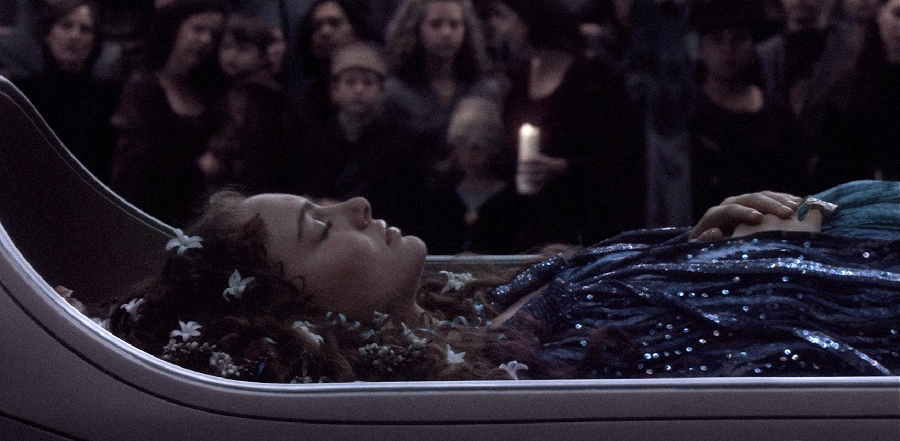

Padmé Naberrie was born on the planet of Naboo in 46 BBY. She was elected queen at the age of 14 and adopted the royal name “Amidala” After her reign, the following queen requested that Padmé continue to serve and represent the people of Naboo as a senator. She agreed, carrying on her political duty during the final years of the Galactic Republic. After meeting again for the first time in 10 years, she and Jedi Padawan Anakin Skywalker began a secret relationship and soon married on her home planet.
Several years later in 19 BBY (Episode III), Padmé revealed to her husband that she was pregnant. After he received a vision of her dying in childbirth, Anakin turned to the dark side of the Force in an attempt to prevent it. After a whole lot of dramatic yelling and fighting, Padmé gave birth to twins Luke and Leia before apparently dying of a broken heart after seeing her husband so evil.
